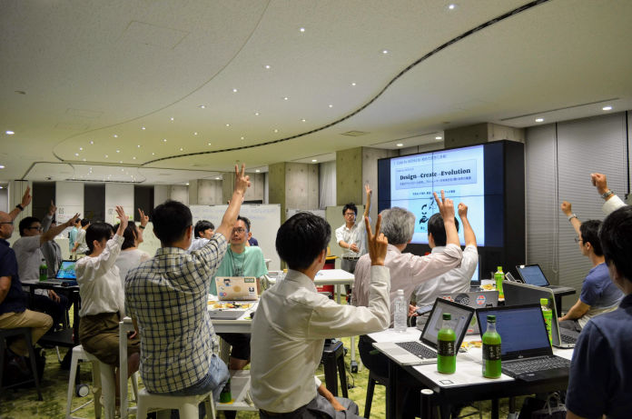
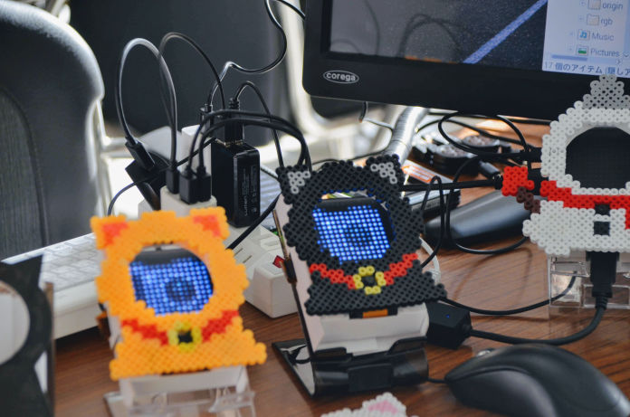
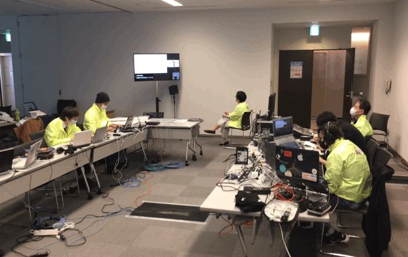

♟勉強会
テクノロジーの便利さを学べる勉強会やツール、アプリの使い方勉強会、オープンデータを活用する勉強会などいろいろな勉強会の企画・運営。

♟テクノロジーの便利さを学べる勉強会やツール、アプリの使い方勉強会、オープンデータを活用する勉強会などいろいろな勉強会の企画・運営。

⚒皆さんが考えたアイデアや課題解決方法などのプロトタイピングを一緒にお手伝いします。課題の深掘りから実証実験まで一緒にお手伝いします。

•••テックスキル、イベント運営スキルを生かしたオンラインイベントサポートや予算が足りないや急な対応など、どんなことでも相談を受け付けます。
Code for AICHI
キックオフ
シニアプログラミング
ハッカソン@Aichi
Mashup Awards 2018
CIVICTECH部門
決勝出場
IBM CALL FOR CODE
セミファイナリスト
Code for Japan
Summit 2020
企画・運営
GEOSPATIAL Hackers
Program 2020
初学者部門最優秀賞
現在も、
シビックテックで
愛知をもっと良く。
Code for AICHIの活動や参加に関するご質問等ございましたら、お気軽にお問い合わせください。参加に関しては特に制限はございません。Facebook等のイベントをご確認いただきご都合がいい会にご参加ください。
ITスキルなどの制限もございません。社会・地域課題にご興味がございましたら、お気軽にご参加くださいませ。